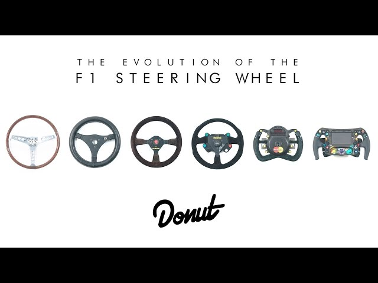
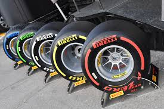

A modern Formula–1-es autók hátsókerék-hajtásúak, nyitott pilótafülkével rendelkeznek, együlésesek, kerekeik nincsenek lefedve, a motort a versenyző mögött helyezik el. A karosszériák nagyrészt szénszálas anyagokból épülnek fel, amelyek könnyűek és erősek. Minden konstrukción kötelező töréstesztet végezni, csak ezután kaphat engedélyt a versenyzésre. Egy autó tömegének a motorral, a különböző folyadékokkal és a versenyzővel együtt minimum 691 kilogrammnak kell lennie. Az autók akár 370 km/h körüli sebességgel is haladhatnak, elsősorban a gyors pályákon, például Monzában. A Formula–1-es autóval valaha elért legnagyobb sebesség rekordját a Honda tartja, 417 km/h-val, amit a Mojave-sivatagban, 2005-ben értek el, minimális leszorító erő mellett. A nagysebességű kanyarokban a versenyzőkre 5 g erő is hathat, szemben például egy utcai sportautóéval, melynél ez az érték legfeljebb 1 g körül mozoghat. 5 g erőnél a versenyző testét súlyának ötszöröse húzza az adott irányba.
A mai autókban szervórendszer segíti a kormányzást, a multifunkciós kormányon több minden állítható, például a fékerőeloszlás vagy a benzin–levegő keverék aránya. Ezen keresztül tudnak versenyzők kommunikálni a csapat többi tagjával, és a kormányon lévő kijelzőről különböző információkat tudhatnak meg. 2007-től a pálya aktuális részén érvényben lévő zászló színe is megjelenik a kormány kijelzőin. A korai időkben, amikor még nem volt szervókormány az autókban, a kormánykerekeket minél nagyobb átmérőjűre próbálták készíteni, a könnyebb kormányzás érdekében. A versenyzők manapság a kormánykeréken található két füllel tudnak sebességfokozatot fel- és leváltani. Korábban minden váltásnál egyik kezükkel el kellett engedniük kormányt, hogy váltani tudjanak. Még a ’90-es évek elején is kerek kormányt alkalmaztak, a mai kormányok azonban már egészen eltérnek a korábbiaktól, és jóval kisebbek is azoknál. Az FIA biztonsági előírásai szerint egy versenyzőnek 5 másodperc alatt el kell tudnia hagyni a pilótafülkét, úgy hogy a kormánykereket eltávolítja.
A Formula–1-es autók formája úgy van kialakítva, hogy minél kisebb légellenállást hozzanak létre, növelve ezzel a sebességet. Ehhez hozzátartoznak még a különböző légterelő elemek (hátsó és első 'szárnyak'), amik nagy leszorító erőt biztosítanak, a nagyobb kanyarsebesség elérése érdekében. Az autók alja szinte teljesen sík, és közel fekszik a pályához, ezzel is növelve a leszorító erőt. 160 km/h sebesség körül az autók akkora leszorító erőt termelnek, amennyi a súlyuk. A legnagyobb sebességüknél ez az autók súlyának a két és félszerese is lehet. Az aerodinamikával komolyabban először az ’50-es években kezdtek el foglalkozni. A Mercedes egy kinyitható, nagy légellenállású szárnyat épített autójába, amivel a fékezést tudta segíteni. Az első szárnyakat a Ferrari alkalmazta az 1960-as években. A spoilerek idővel olyan magasra emelkedtek, hogy balesetveszélyesek lettek, és később szabályozták méreteiket. A wing-cart a Lotus fejlesztette ki, és 1978-ban világbajnok is lett. Az ötlet lényege, hogy míg a levegő a szárny felső felületén viszonylag rövid utat tesz meg, addig az alsó felületén hosszabbat, így lefelé ható vákuum keletkezik, amely a kocsit az út felé szorítja. Ezt a hatást „szoknyákkal” fokozták tovább, amelyek még kisebb légnyomást hoztak létre az autók alatt, még nagyobb leszorítóerőt elérve. A megoldást az 1983-as szezontól betiltották. Ezután már nem történt jelentős változás az aerodinamikában.[146] Napjainkban a csapatok az autókat azoknak méretarányosan lekicsinyített (a szabályok szerint legfeljebb 60%-os) modellekkel szélcsatornában tesztelik. 2009-re jelentős szabályváltozásokat hoztak, minek hatására az autók első terelőszárnya alacsonyabb és szélesebb, míg a hátsó magasabb és keskenyebb lett. A karosszéria különböző pontjain elhelyezett kiegészítő aerodinamikai elemeket betiltották. 2011-ben új elemként jelent meg az állítható hátsó szárny (röviden DRS – az angol drag reduction system kifejezésből), amelynek elsődleges funkciója az előzések megkönnyítése. A szerkezet időmérő edzésen a pálya bármely részén használható, versenyen viszont szigorúbbak a feltételek: az erre kijelölt pályaszakaszon, az úgynevezett DRS-zónában aktiválhatja a versenyző, de csak akkor, ha a zónát megelőző ellenőrzési ponton legalább egy másodpercen belül megközelítette az előtte haladót. A szárny nyitásával csökken a leszorító erő, ezáltal nagyobb sebesség érhető el. Esős időjárás esetén a megoldás biztonsági okokból nem alkalmazható.
A sportág történetében 2, 4, 6, 8, 10, 12 és 16 hengeres, soros, fekvő, V, W és H elrendezésű, atmoszferikus nyomású vagy turbófeltöltős motorokat használtak. Az erőforrásokat négy csoportba lehet osztani: a gyári csapatok saját autóik hajtására épített motorjai (Ferrari, Mercedes, Renault), magáncsapatok számára készített motorok (például Jaguar–Cosworth, Williams–Toyota), egy gyári és egy kisebb motorgyártó cég közötti együttműködés, szövetség révén megalkotott motor (például Judd–Yamaha, Cosworth–Ford, Mecachrome–Renault, Mugen–Honda), magáncsapatoknál előforduló motorok, amelyeket gyári csapatok biztosítanak azok rendelkezésére, de átnevezik őket (például Petronas (Ferrari), Playlife (Renault), Acer (Ferrari), Megatron (BMW), European (Cosworth). Az 1970-es évek végén találták ki a Renault-nál a turbófeltöltős motort. A turbómotorok 1983-tól domináltak végérvényesen, amelyek 1000 lóerő körüli teljesítményükkel kiszorították a szívómotoros autókat az élmezőnyből. A csúcsteljesítményüket később korlátozták az autók nagy fogyasztása miatt. A Formula–1 legerősebb motorját a BMW készítette el 1984-ben, amelynek teljesítményét 1400 lóerőre becsülték. 1989-ben, két átmeneti év után tiltották be a turbófeltöltők használatát, amikor egy párhuzamos bajnokságot (Jim Clark-kupa a versenyzőknek és Colin Chapman-kupa a csapatoknak) írtak ki a turbó nélküli autók részére. Ezután mindegyik csapatnak ismét szívómotort kellett alkalmaznia, melynek megengedett maximális hengerűrtartalma 3500 cm³ lehetett. A belső égésű motoroknak a jelenlegi szabályok szerint 2,4 litereseknek kell lenniük, és csak V8 elrendezésben használhatják őket a csapatok. 2006 óta a csapatok nem fejleszthetik a motorokat. Az erőforrások fordulatszáma a 20 000 1/percet is elérhetik, és legnagyobb teljesítményük 780 lóerő (582 kW) körüli. 2007-től a motorok maximális fordulatszámát 19 000 fordulat/percre, 2009-ben 18 000-re korlátozták. 2006 előtt a csapatok 3 literes, V10-es motorokat használtak. A motorok 70 liter üzemanyagot is elfogyaszthatnak 100 kilométeren. Az üzemanyagok nagyon hasonlítanak a nyilvánosan beszerezhető ólommentes benzinekhez. Az olajok, amelyek kenik és védik a motorokat a túlmelegedéstől, nagyon hasonlítanak viszkozitásukban a vízhez. A legsikeresebb motor a Formula–1-ben a Ferrari, több mint 200 futamgyőzelemmel, mögötte a Cosworth a második, több mint 150 győzelemmel.
Sokat számítanak a kanyarokban az aerodinamika mellett a gumik is. 1997 után 2009-től újra bevezették a 'slick' abroncsokat, azaz a teljesen sima felületű gumikat. 2007-től négyféle száraz időre való gumikeverék létezik, ezekből a gyártó döntése alapján minden futamra két-két fajtát bocsátanak a csapatok rendelkezésére, mindkettőből kötelesek legalább egy-egy készletet használni egy versenyen. 2011-től a Pirelli lett a kizárólagos beszállító. 2016-tól ötféle száraz időre való gumikeveréket használtak, amelyek közül futamonként hármat bocsátottak a csapatok rendelkezésére, ezek közül kétfélét kellett felhasználni a futam során. 2018-ban már összesen hétféle gumikeverék volt, bár ezek közül a szuperkemény gyakorlati használatára egyszer sem került sor.
